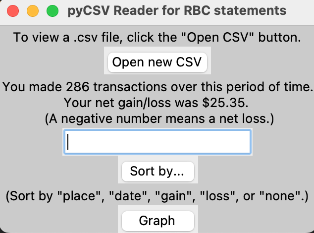
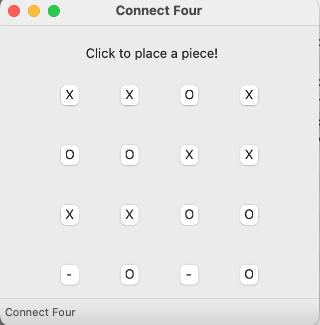

This is the project that I have been working on the most lately. Inspired by my love of old-school turn-based JRPGs, I have attempted to create a game
emulating that style, programmed entirely in Java! The GUI was created using the Swing framework, and the turn-based battle system is fully functional.
However, I haven't been able to work on this one as much lately, due to being preoccupied with university.
Currently, the game has two levels, with more planned to be added when I have the time. Also includes something vaguely resembling a storyline.
I know it's not perfect, but maybe you should give it a try!
Download the game and its .jar file here. The README file contains all you need to know about running the game.
Smart Password Manager
My final project for the CPSC210 course at the University of British Columbia. This is a simple, elegant password manager that helps you keep your
passwords organized and all in one place. Functions include adding entries with a label, username, and password, and being able to mark an entry's category
and importance.
The user is also able to modify and delete entries at will, search for an entry with a specific label, and sort the displayed entries by category and importance.
Compile and run this program from the command line, and enjoy your new, organized password experience!
BotReal
My first foray into Python, API usage, and making Discord bots! This simple Discord bot will respond to users' commands with certain text responses, all of which
are outlined in the README file on this project's GitHub page.
If, for any reason, you want to incorporate this bot into your Discord server, just send me an email at the address on the homepage of this site!
However, doing so is not recommended as I have not yet found a way to continuously host the bot - this means that it is only active when I am running its program.
I'll update this section if and when I find a solution to this problem!
In the meantime, enjoy browsing the GitHub page, I suppose.
PyReader for RBC Bank Statements

My second personal project, inspired by the compelling idea that I have been spending way too much money on unnecessary stuff, and I really
don't want to be broke anytime soon. So, I made this project to help myself track my spending: gains and losses of my account over a period of time,
as well as being able to sort by where I spent money, and on what dates. Also, there is a function that lets you graph this gain and loss, using
the matplotlib package. I mean, it hasn't really helped me stop spending too much money, but it's pretty cool, I guess.
More details can be found on this project's GitHub page.
C++ Connect Four with GUI

I've been working on this project on and off for a while. It started a long time ago when I was researching algorithms in preparation
for one of my classes in my 2nd year of university, and came across this "minimax" algorithm that I found very interesting.
So, I decided to make a project out of it!
First, I implemented a tic-tac-toe game in the command line, then kind of forgot about this project as I needed
to prepare for my second year of university. Later on, I came back to it and decided to try increasing the board size to 4x4. After dealing with all of the ensuing runtime
complexity issues and successfully implementing alpha-beta pruning to remove this problem, I then forgot about it for another while until classes had died
down a bit, then came back and used the wxWidgets library to give it a simple UI.
There are 3 difficulty levels to choose from. Enjoy!
Here's the GitHub page.